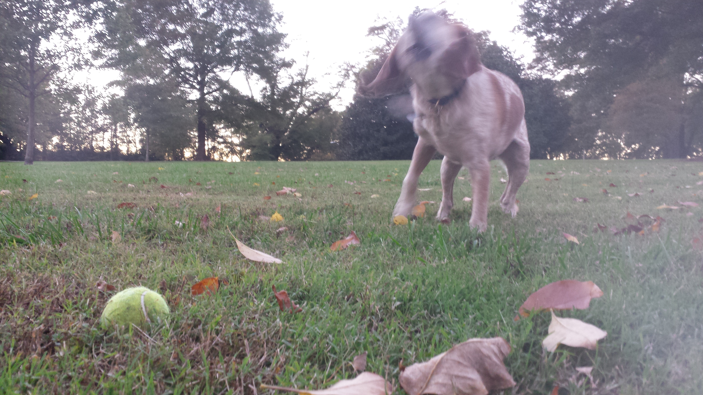

Alex B. Fine

Summary
My name is Alex Fine, and this is my website. I live and work in Durham, NC.
To read about my professional life as a data scientist, click here.
To read about my past life as an academic cognitive scientist, click here.
For poems, essays, short stories, ``songs", and other art, click here.
Xoxo.